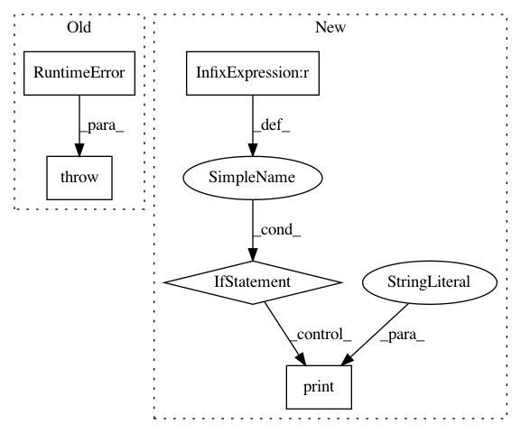

1a34399653838ece7a20e40d69f048f66ab6a045,local/server/streamlit/local/Proxy.py,Proxy,_client_ws_handler,#Proxy#Any#,126
Before Change
// Get the report name
report_name = request.match_info.get("report_name")
raise RuntimeError(f"Got incoming websocket connection with name="{report_name}"")
// Establishe the websocket.
ws = web.WebSocketResponse()
await ws.prepare(request)
After Change
connection, queue = await self._add_queue(report_name, ws)
while True:
// See if the queue has changed.
if connection != self._connections[report_name]:
print("GOT A NEW CONNECTION")
self._remove_queue(report_name, connection, queue)
connection, queue = await self._add_queue(report_name, ws)
// Send any new deltas across the wire.
await queue.flush_deltas(ws)
// Watch for a CLOSE method as we sleep for throttle_secs.
try:
In pattern: SUPERPATTERN
Frequency: 3
Non-data size: 5
Instances
Project Name: streamlit/streamlit
Commit Name: 1a34399653838ece7a20e40d69f048f66ab6a045
Time: 2018-04-16
Author: adrien.g.treuille@gmail.com
File Name: local/server/streamlit/local/Proxy.py
Class Name: Proxy
Method Name: _client_ws_handler
Project Name: streamlit/streamlit
Commit Name: 4e1a728f3a7af1f1db1b8265f208cc34880bf17e
Time: 2018-05-18
Author: armando@playground.global
File Name: lib/streamlit/Proxy.py
Class Name: Proxy
Method Name: _client_ws_handler
Project Name: streamlit/streamlit
Commit Name: d6b3aa9668d0211b8439fa8057b5295c1ab11f23
Time: 2018-05-21
Author: armando@playground.global
File Name: lib/streamlit/Proxy.py
Class Name: Proxy
Method Name: _client_ws_handler